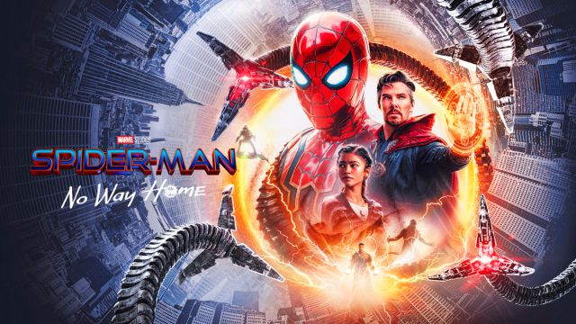

Spider-Man: Sin camino a casa
La nueva pelicula de Spider-Man ha sido un exito en taquilla, recaudando mas de $1 billon en su primer fin de semana de estreno.
La nueva pelicula de Spider-Man ha sido un exito en taquilla, recaudando mas de $1 billon en su primer fin de semana de estreno.
Disney ha anunciado que está trabajando en una nueva versión de El rey Leon, que sera una secuela directa del clasico animado.

El director Matt Reeves ha revelado que su nueva película de Batman será una historia de origen que explorará los primeros años de Bruce Wayne como el Caballero de la Noche.